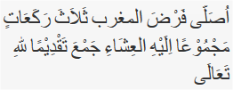
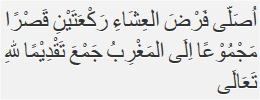

Solat Jama Qosor
Solat Jama Qosor
Berniat menjamak qasar salat magrib dengan jamak taqdim. Jika dilafalkan sebagai berikut:  ”Ushalli fardhal maghribi tsalatsa raka'aatin majmuu'an 'ilaihil 'isyai jam'a taqdhiiman lillaahi-ta'aala” Artinya: “Saya (niat) shalat magrib tiga rakaat digabungkan dengan salat isya’ dengan jamak taqdim karena Allah Ta’ala” Berdiri dan niat salat isya’. Jika dilafalkan sebagai berikut:  ”Ushalli fardhal 'isyai raka'ataini qashran majmuu'an 'ilal-maghribu jam'a taqdhiiman lillaahi-ta'aala” Artinya: “Saya berniat salat isya’ dua rakaat digabungkan dengan salat magrib dengan jamak taqdim, diqasar karena Allah Ta’ala”
Jama' Qosor Taqdim
Cara Melaksanakan Shalat Jamak Qashar Taqdim, Maghrib dengan Isya'